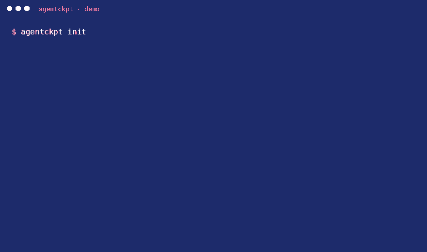

Rx · undo for coding agents · v0.2.0 · MIT
Remember to give your agent its meds.
Take 1 snapshot before every agent turn. When it acts up, one pill puts the files back. No interactions with git.
agentckpt snapshots your whole working tree, untracked files included, into a private store under .agentckpt/ while Codex, Claude Code, Gemini CLI, OpenCode or a Cursor agent works. When a turn goes wrong, restore any snapshot. Your branches, index and history are never touched.
How it works one agent turn, one dose · scroll or tap a step
- a.txt
- untracked.md untracked
- new.py new
.git · HEAD 63fc0ae · index cleanunchanged
Step 1 · init
Fill the organizer
$ agentckpt initCreates
.agentckpt/and appends.agentckpt/to your.gitignore. That's the only file of yours it edits.Take one before the turn
$ agentckpt snap -m "before agent" b66469f 3 files before agentStages tracked and untracked files into the shadow index and commits them there.
The agent acts up
# edits a.txt, deletes untracked.md, # creates new.pyWith the v0.2.0 hooks the agent takes its own dose before every prompt and edit;
agentckpt watchalso works.Give it the pill
$ agentckpt restore b66469f Skipped 1 conflict(s) … re-run with --force ! a.txt Restored 2 file(s) from b66469f $ agentckpt restore b66469f --force Restored 3 file(s) from b66469fBytes go straight back into the tree.
new.pystays, since restore never deletes.Check for interactions
$ git log --oneline 63fc0ae baseNo
add, nocommit, no checkout and no branch moves in your real repo.
Drug Facts
Uses
Temporarily relieves these symptoms of agentic coding:
/undowent missing in Codex; the issue asking for reliable rollback is still open (openai/codex#9203, 522 upvotes).- The agent deleted a file git never saw:
git restoreonly knows tracked content (v2ex.com/t/1220282). - Stash and WIP commits leak agent noise into your index, reflog and branch (v2ex.com/t/1218209).
Directions
Adults and agents of all ages: Python 3.9+, git on PATH. Not on PyPI yet.
- Try it
uvx --from git+https://github.com/Blackman99/agentckpt agentckpt demo - Install
pipx install https://github.com/Blackman99/agentckpt/releases/download/v0.2.0/agentckpt-0.2.0-py3-none-any.whl - Take
agentckpt init && agentckpt snap -m "before agent"
The wheel comes from GitHub Releases v0.2.0.
Auto-refill new in v0.2.0
Let the agent take its own dose before each prompt, before each edit or shell command, and after each turn. Every config calls one command, which always exits 0 and never blocks a prompt or a tool call:
agentckpt hook --source claude # Codex, Claude Code, Gemini CLI, OpenCode
agentckpt run -- aider # anything elseDrop-in configs are in the hooks guide.
Active ingredients (in each snapshot) Purpose
- init
- shadow store
- snap
- take a dose
- hook
- auto-dose from agent hooks
- run
- dose around any agent command
- watch
- auto-snap, polling
- ls
- list, --json
- diff
- vs tree or --to
- restore
- --force · --path
- prune
- --keep 50
- doctor
- check-up
Inactive ingredients: Python 3.9+ standard library, git. Zero dependencies. MIT.
Warnings side effects in v0.2.0
- Restore doesn't delete. Files the agent created after the snap stay. Use
agentckpt diff <id>to see them. - Only what it saw. Gitignored files and files over 10 MiB (
--max-bytes) aren't stored. - Hooks or polling.
watchpolls and can catch a half-written state; use the agent hooks (Codex, Claude Code, Gemini CLI, OpenCode) for clean per-turn snapshots. - An undo buffer, not a backup. The store lives in the project, so
git clean -fdxremoves it.
Do not operate heavy refactors without a snapshot.
Interactions
None with git. Every git command agentckpt runs looks like git --git-dir=.agentckpt/git --work-tree=.: a separate repo with its own index. Your HEAD, index, reflog and branches stay exactly as they were.
Clinical trial agentckpt demo, the same run CI does

Questions?
Ask your doctor if agentckpt is right for you. (It is.)